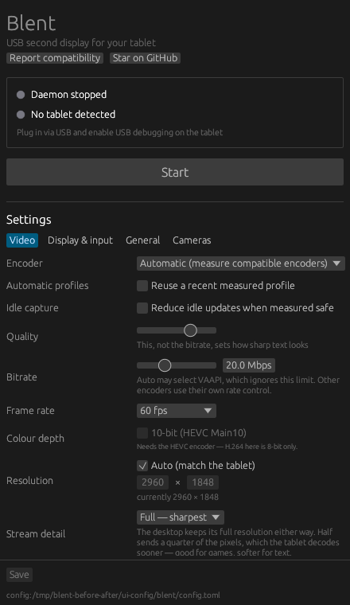
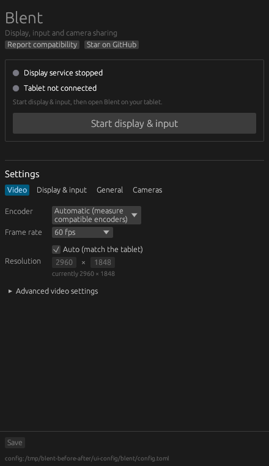
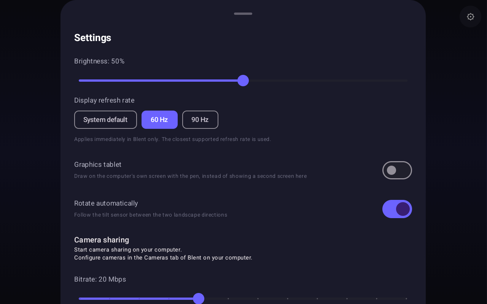
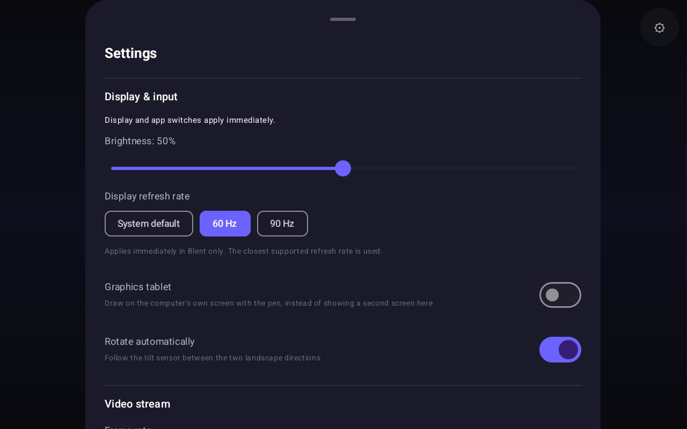
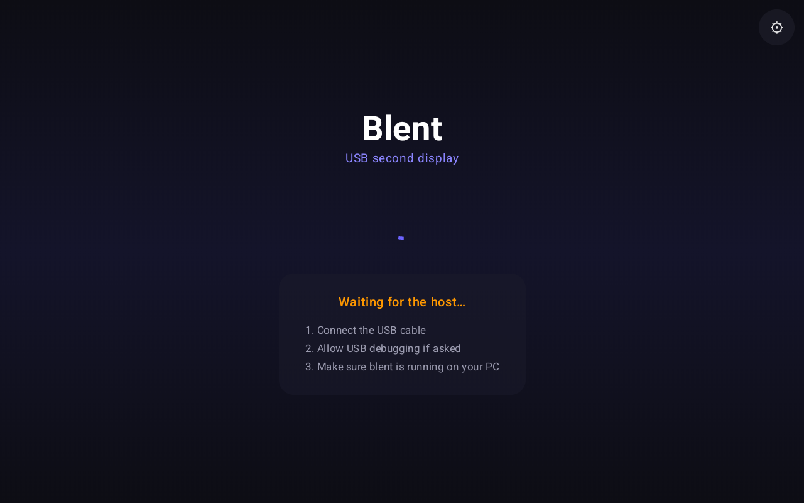
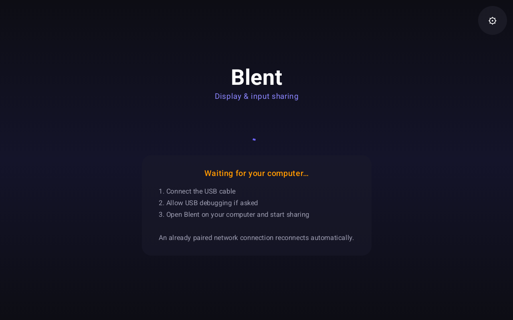

Actual app screenshots. Same window sizes and saved preferences. Before: desktop rebuilt from fa1bfba; Android saved pre-redesign release. After: c696f78. Current Android app restored after capture.





